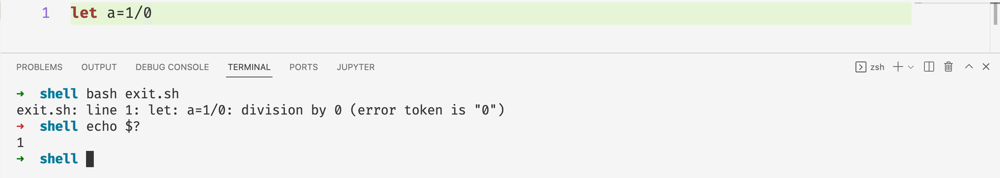
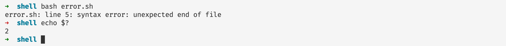
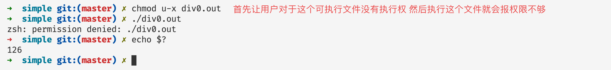
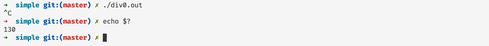
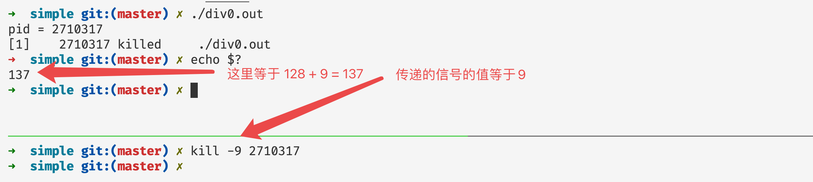
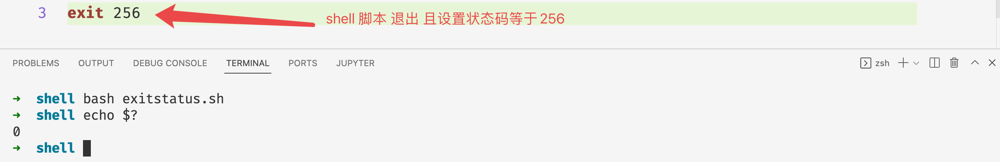
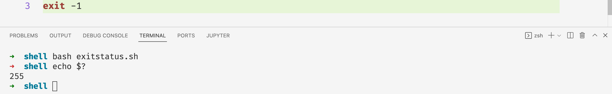

程序退出状态码
前言
在本篇文章当中主要给大家介绍一个shell的小知识——状态码。这是当我们的程序退出的时候，子进程会将自己程序的退出码传递给父进程，有时候我们可以利用这一操作做一些进程退出之后的事情，比如当程序执行失败或者被某个信号杀死我们就可以了解到，然后做出对应的措施。
状态码简介

上图是一个zsh的截图，当我们执行命令asdsad之后，因为没有这个命令，所以zsh（类似于bash的一种shell），输出没有找到这个命令，但是我们发现图中箭头➡️由绿色变成红色，表示程序不是正常退出。现在有一个问题是，zsh是怎么知道程序不是正常退出的呢？其实就可以根据子进程退出的状态推断。在文章的最后我们用C语言实现一下，看看如果在父进程接收子进程的退出的状态。
我们在命令行当中可以通过命令 echo $? 查看上一个进程退出时候的退出码，这里的上一个进程就是 ls 命令：

程序正常退出的时候退出码等于0。
退出码表
| 退出码 | 含义 | 例子 | 解释 |
|---|---|---|---|
| 1 | 一般的错误 | 除以0 | 一般的除以0的错误，执行没有权限的操作 |
| 2 | shell 内部操作失败 | 通常是shell操作时候的命令错误，文章后面有一个例子演示 | |
| 126 | 执行不能够执行的文件 | /dev/random | 权限问题或者命令不能够执行 |
| 127 | 命令没有找到 | 非法或者不存在的命令 | 执行一个系统当中不存在的命令，可以通过设置PATH环境变量 |
| 128+n | 错误的信号值 | Kill -9 PID | 杀死进程号为PID的进程，进程的退出码等于 128 + 9 |
| 130 | ctrl+c 之后进程的返回值 | 和上一条一样ctrl+c的信号值等于2 | |
| 其他 | 退出码s不在范围之内 | exit(-1) | 如果退出码n不在0-255之内，那么程序退出之后的退出码为n&255，并且取低8位作为最终的结果 |
实例说明
退出码——1
除以0

执行没有权限的操作

上面直接进入root用户的目录，因为没有权限，查看进程的退出码等于1。
shell内部操作失败——退出码2
a=1
if [ $a -eq 1 ]
then
echo hello world
比如对于上面的shell脚本是有语法错误的正确的语法还需要在最后加上fi，现在我们执行上面的脚本查看结果：

退出码126
当因为权限问题或者命令不可以执行那么进程的退出码就是126:

命令没有找到——退出码127

信号值——128+n(信号对应的数值)
我们可以使用kil -l命令查看 linux 操作系统当中信号以及对应的数值：
1) SIGHUP 2) SIGINT 3) SIGQUIT 4) SIGILL 5) SIGTRAP
6) SIGABRT 7) SIGBUS 8) SIGFPE 9) SIGKILL 10) SIGUSR1
11) SIGSEGV 12) SIGUSR2 13) SIGPIPE 14) SIGALRM 15) SIGTERM
16) SIGSTKFLT 17) SIGCHLD 18) SIGCONT 19) SIGSTOP 20) SIGTSTP
21) SIGTTIN 22) SIGTTOU 23) SIGURG 24) SIGXCPU 25) SIGXFSZ
26) SIGVTALRM 27) SIGPROF 28) SIGWINCH 29) SIGIO 30) SIGPWR
31) SIGSYS 34) SIGRTMIN 35) SIGRTMIN+1 36) SIGRTMIN+2 37) SIGRTMIN+3
38) SIGRTMIN+4 39) SIGRTMIN+5 40) SIGRTMIN+6 41) SIGRTMIN+7 42) SIGRTMIN+8
43) SIGRTMIN+9 44) SIGRTMIN+10 45) SIGRTMIN+11 46) SIGRTMIN+12 47) SIGRTMIN+13
48) SIGRTMIN+14 49) SIGRTMIN+15 50) SIGRTMAX-14 51) SIGRTMAX-13 52) SIGRTMAX-12
53) SIGRTMAX-11 54) SIGRTMAX-10 55) SIGRTMAX-9 56) SIGRTMAX-8 57) SIGRTMAX-7
58) SIGRTMAX-6 59) SIGRTMAX-5 60) SIGRTMAX-4 61) SIGRTMAX-3 62) SIGRTMAX-2
63) SIGRTMAX-1 64) SIGRTMAX
当我们在命令行使用ctrl+c中断程序的执行的时候，这个正在执行的进程就会接受到SIGINT信号，根据上文这个信号对应的数值为2，因此程序的退出码等于130（128 + 2）。

下面是一个通过kill命令发送对应的信号的例子：

可以看到的程序的退出码是符号我们的预期的。
不在范围内不的退出码
不在范围内（0-255）的退出码，需要和 0xff 进行 & 操作，得到的结果作为无符号数作为最终的程序的退出码！

在上面的例子当中退出码256的二进制表示 1_0000_0000 他和 255（二进制表示为1111_1111）进行与操作得到的结果为1_0000_000，低8位等于0000_0000，因此最终的退出码等于0。

在上面的图当中-1的二进制表示等于1111_1111 因此最后得到的退出码等于1111_1111 = 255。
C/Python语言获取进程退出的状态码
#include <unistd.h>
#include <sys/types.h>
#include <sys/wait.h>
#include <stdio.h>
int main() {
if(fork() == 0) {
_exit(1); // 子进程执行
} else {
// 父进程执行
int status;
wait(&status); // WEXITSTATUS 这个宏就是获取子进程退出时候的退出码
printf("status = %d\n", WEXITSTATUS(status));
}
return 0;
}
在上面的代码当中父进程执行的 wait 函数就是等待子进程的状态变化，当子进程退出的时候 wait 函数会返回，同时将子进程一些状态信息保存在 status 当中，然后我们就可以子进程传递给父进程最后的信息啦。其中 WEXITSTATUS 这个宏就是获取子进程退出时候的退出码！对应的 python 实现如下图所示：
import os
import sys
if __name__ == '__main__':
pid = os.fork()
if pid == 0:
sys.exit(-1)
else:
pid, status = os.wait()
print(os.WEXITSTATUS(status))
总结
在本篇文章当中主要给大家介绍了一些常见的程序退出的状态码！并且给出一下例子帮助大家仔细理解，并且使用C语言和python语言实现获取子进程退出时候的退出状态码。
以上就是本篇文章的所有内容了，我是LeHung，我们下期再见！！！更多精彩内容合集可访问项目：https://github.com/Chang-LeHung/CSCore
关注公众号：一无是处的研究僧，了解更多计算机（Java、Python、计算机系统基础、算法与数据结构）知识。